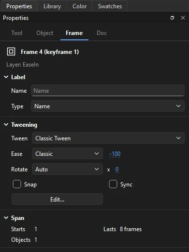
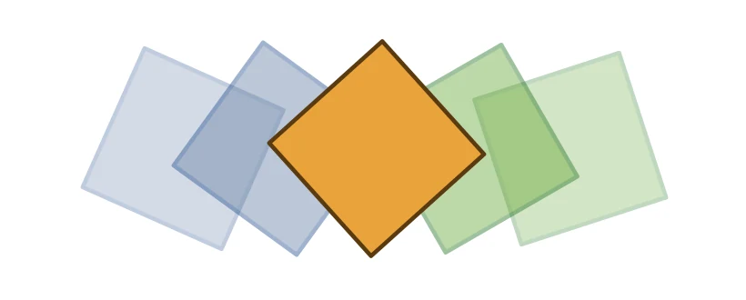

Animation
Frames and keyframes
A keyframe is a frame where the artwork changes. Ordinary frames after it hold that artwork on screen. Frame-by-frame animation is a keyframe on every frame or two; tweened animation is keyframes further apart with Phoenix filling in between.
Insert and remove frames
| Command | Shortcut | Does |
|---|---|---|
| Frame | F5 | Adds frames, extending how long the current artwork holds |
| Keyframe | F6 | Makes a keyframe that starts as a copy of the previous one |
| Blank Keyframe | F7 | Makes an empty keyframe, to draw the next drawing from scratch |
| Remove Frames | Shift+F5 | Deletes the selected frames, closing the gap |
| Clear Keyframe | Shift+F6 | Turns a keyframe back into an ordinary frame |
| Clear Frames | Alt+Backspace | Empties the selected frames, leaving the frames after them where they are |
These are in and , and on the menu you get by right-clicking frames.
You don't always need F6. If you draw on a frame of a layer that is only holding an earlier keyframe, Phoenix makes the keyframe for you.
Select frames
- Click a cell to select it. This also moves the playhead there and makes that layer current.
- Drag across cells, including across several layers, to select a block.
- Shift-click to extend the selection.
- Ctrl-click to add single frames anywhere, on any layer, or take them out again. Frame commands such as F6 or Clear Keyframe then act on each of them.
- (Ctrl+Alt+A) selects every frame of every layer.
To select whole spans between keyframes with one click, turn on Span Based Selection in the frame view menu.
Move, copy and stretch frames
| Do this | To |
|---|---|
| Drag a selected block | Move it to another frame or layer |
| Alt when you drop | Copy the block instead of moving it |
| Click a keyframe, then drag it | Move just that keyframe; hold Alt when you drop to copy it |
| Ctrl-drag the end of a span | Lengthen or shorten the span |
Frame commands
- Cut, Copy, Paste Frames
- Ctrl+Alt+X, C and V. Paste Frames inserts, pushing later frames along.
- Paste and Overwrite Frames
- Pastes over the frames already there instead of inserting.
- Reverse Frames
- Plays the selected frames backward.
- Convert to Frame-by-Frame Animation
- Turns a tween into a keyframe on every frame, ready to adjust by hand.
- Copy Motion, Paste Motion
- Copies the movement of a tween and applies it to another object.
- Remove Tween
- Removes a tween, leaving its keyframes.
- Distribute to Keyframes
- In . Select several objects on one frame and each goes on a keyframe of its own, one after another: the bottom one stays, the next goes on the frame after, and so on.
Edit Multiple Frames
Turn on to see the keyframes within the onion skin markers in full, not faded, and to select and change their artwork together: drag a marquee over a whole run of drawings and move them all at once, for example. Hidden and locked layers are left out. Set the range by dragging the onion skin markers in the ruler.
Frame labels
Click a keyframe and use the Label section of the Frame tab to name it. The Type list makes it a Name (a marker scripts can jump to), a Comment (a note for yourself), or an Anchor. Labels show in the timeline, which makes long scenes easier to find your way around.

Playback
| Command | Shortcut |
|---|---|
| Play / Stop | Enter |
| Step forward one frame | . |
| Step backward one frame | , |
| Next keyframe | Alt+. |
| Previous keyframe | Alt+, |
| Rewind to the first frame | Shift+, |
| Go to the last frame | Shift+. |
| Loop playback | Alt+Shift+L |
These are also in the Control menu and as buttons in the timeline header. They work when the stage or timeline has focus, so they never interfere with typing in a text box or panel.
Playback runs at the document's frame rate. If a frame takes too long to draw, Phoenix skips ahead to stay in time, so what you see matches the real speed. Sounds play along, unless you turn on (Ctrl+Alt+M).
Looping a range
Turn on Loop Playback and drag the ends of the loop range in the ruler to play just part of the timeline over and over, which is ideal for polishing a cycle.
Onion skinning
Onion skinning shows nearby frames faintly behind the current one, so you can draw each new drawing in relation to the last. Turn it on with the onion skin button in the timeline header, or (Alt+Shift+O).

Drag the markers in the ruler to set how many frames are shown, or choose a preset and other options from (also by right-clicking the onion skin button):
- Onion 1, 2, 5, All
- How many frames to show on each side.
- Outline
- Shows the other frames as outlines only.
- Keyframes Only
- Skips held frames and shows only drawings.
- Anchor Onion
- Keeps the onion skin on the frames it covers when you turn this on, instead of moving with the playhead: step through a run of frames and compare each with the same few. Drag the markers in the ruler to change which frames it stays on.
- Opacity
- 25, 45, 65 or 85%.
- Color Before, Color After
- The tints for earlier and later frames.
Locked layers are left out of onion skinning, so lock the background to keep it from cluttering the view.
Scripts such as stop() honored during playback, and playback that runs on from one scene into the next.